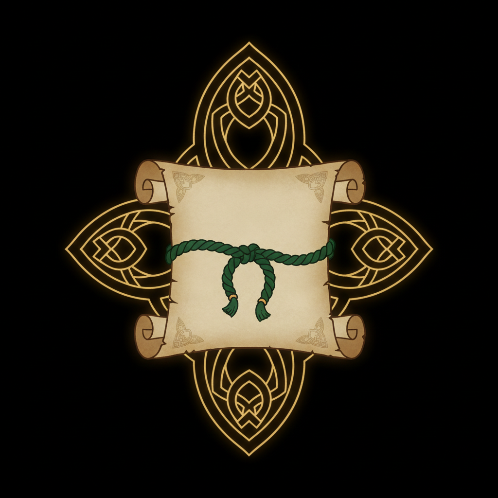
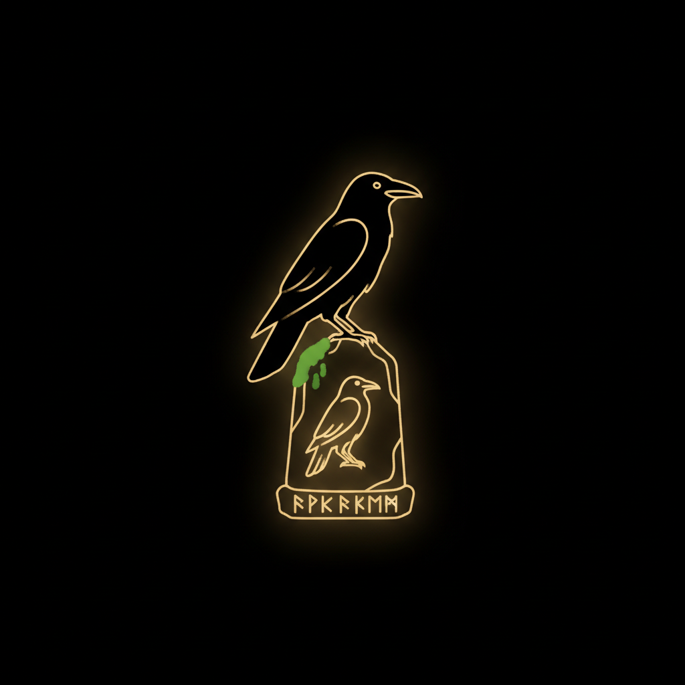
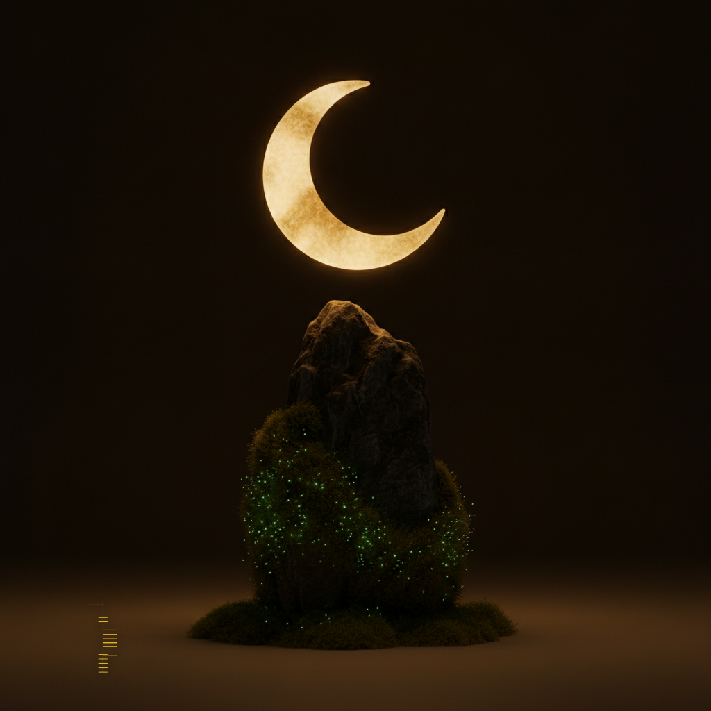
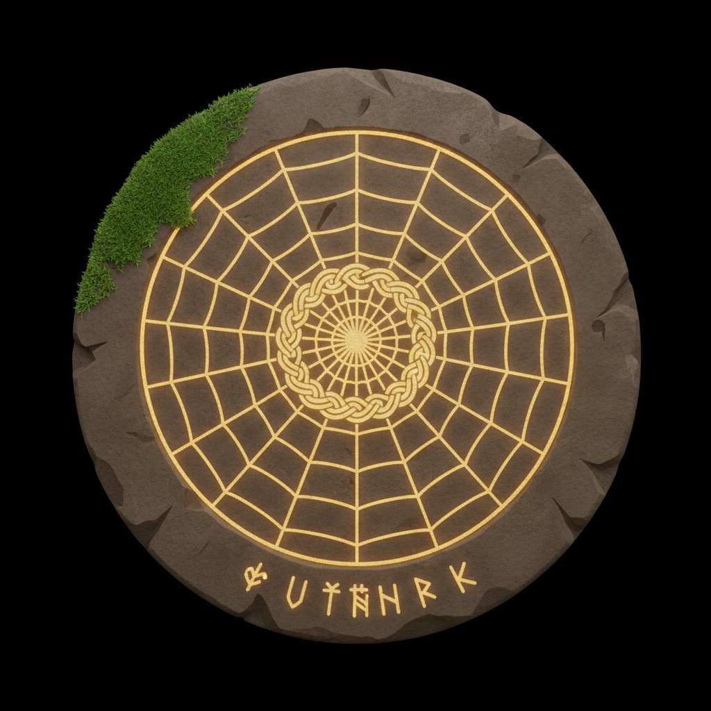
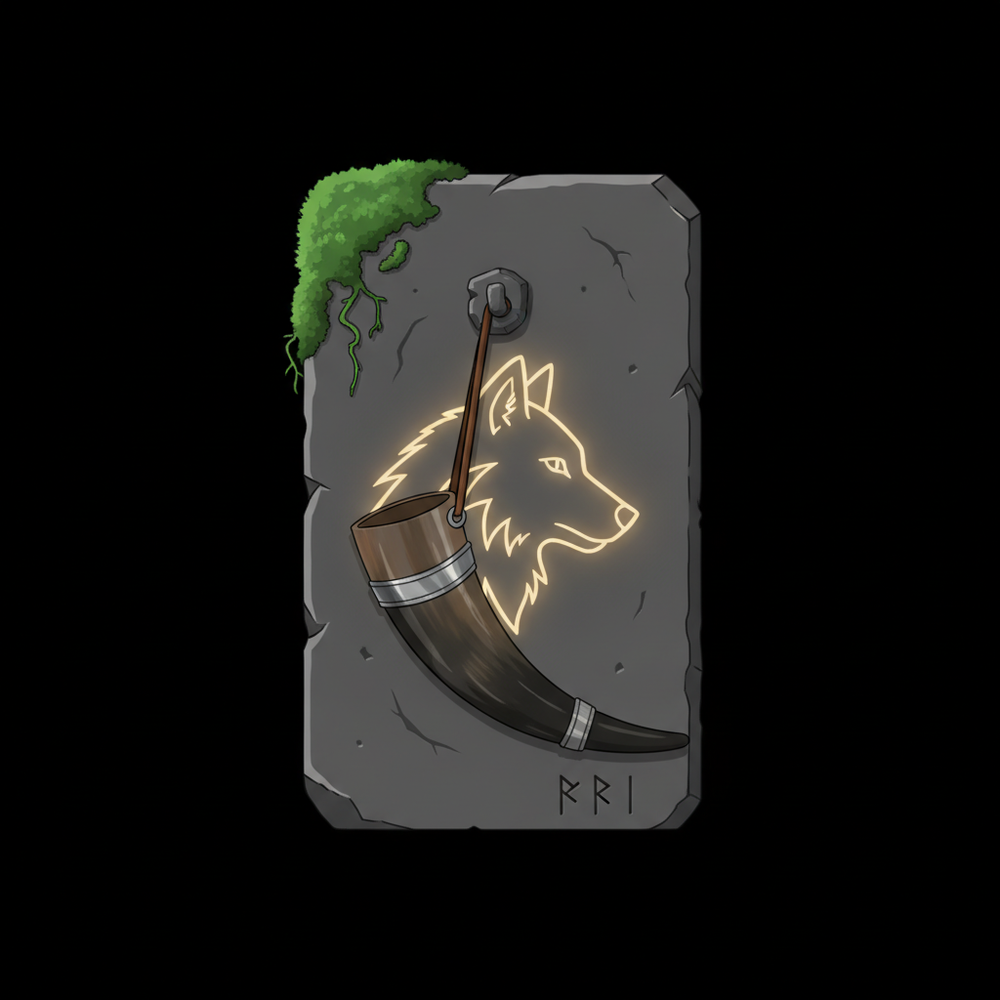
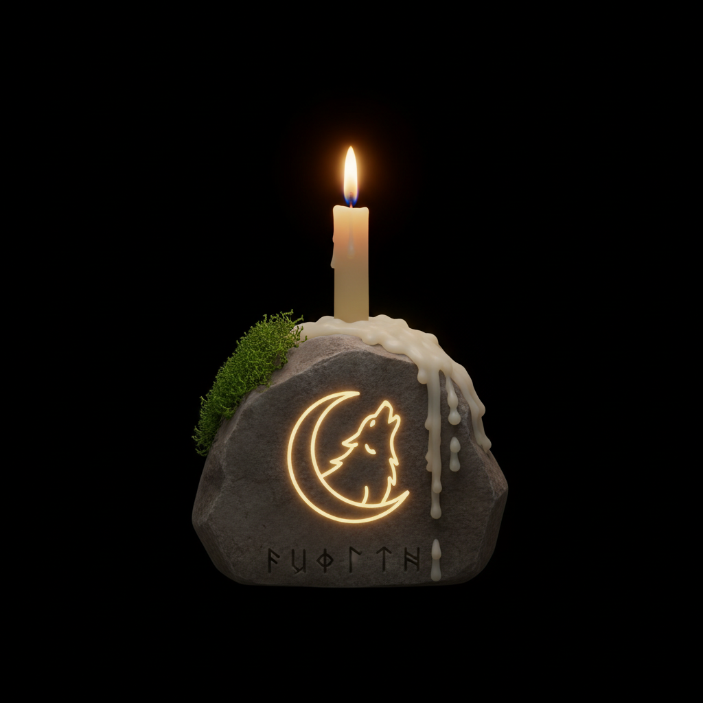

The Creed
Three strands — seanchaí, Fianna, Fenrir — the commandments, the rites, the two tongues.
home-lab tinkerer, AI agent fleet operator — Athlone, Co. Westmeath
seanchaí ᛫ fionn mac cumhaill agus na fianna ᛫ fenrir
An amalgamation of many spores — grown and built both. Everything here flows down from FiremanDecko, the runemaster — the GitHub annals, the YouTube reels, the Instructables relics. It begins with the creed.
The Telling · Pick A Path

Three strands — seanchaí, Fianna, Fenrir — the commandments, the rites, the two tongues.

Three spores, one culture — the agents of the garden.

The ways through the garden.

49 projects in seven groves, three keepers of the self-hosted shelf.

181 reels of the worlds the smith wanders.

Per-project ephemera — the notes between the stones.